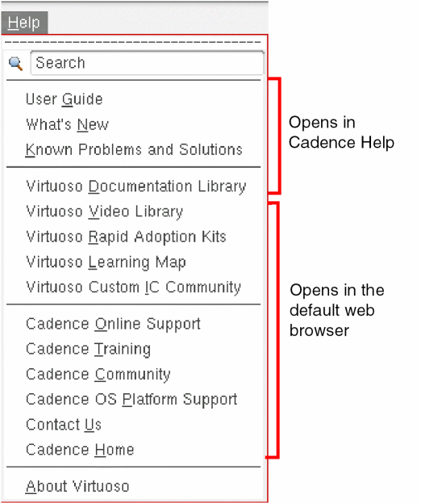

1
Virtuoso Hierarchy Editor Overview
This chapter covers the following topics:
- What You Can Do with the Hierarchy Editor
- Starting the Hierarchy Editor
- About the Hierarchy Editor User Interface
- Customizing Hierarchy Editor Columns
- Updating the Configuration Automatically
- Displaying the Tree View or Table View
- Filtering Cellviews
- Viewing the Legend
- Changing the Hierarchy Editor Fonts
- Saving Custom Settings
- Exiting the Hierarchy Editor
What You Can Do with the Hierarchy Editor
The Virtuoso® Hierarchy Editor lets you view many levels of a single design using either a table view or a tree view. The Hierarchy Editor also lets you create a configuration that provides expansion information for mixed-signal partitioning. The configuration file is the expand.cfg file, which specifies how a design is to be expanded.
You can use the Hierarchy Editor to
- Display the configuration in order to traverse the hierarchy of your design
- Display default cell and instance bindings
- Change global library, view, and stop lists
- Change cell and instance bindings
- Change the inherited view list and library list for cells and instances
- Specify occurrence bindings
- Create new configurations
Starting the Hierarchy Editor
You can start the Hierarchy Editor from a terminal window, from the Virtuoso design environment, and from Cadence applications such as the Virtuoso schematic editor.
Starting the Hierarchy Editor from a Terminal Window
To start the Hierarchy Editor from a terminal window,
-
Type the following command:
cdsHierEditor &
For a list of options with which you can start the Hierarchy Editor, see “Command-line Options”.
Starting the Hierarchy Editor from the Virtuoso Design Environment
To start the Hierarchy Editor from the Virtuoso design environment,
-
Start the Virtuoso design environment.
virtuoso & -
Choose File – Open.
The Open File form appears.
- In the File section of the form, select the library, cell, and view of the configuration that you want to open.
- In the Application field, set the application to Hierarchy Editor, if it is not already set.
- In the Open for field, select edit if you want to edit the configuration or read if you want to open the configuration read-only.
-
Click OK.
The Open Configuration or Top Cellview form appears.
- In the form, in the Configuration “configName” field, select yes. This selection will open the Hierarchy Editor.
- In the Top Cell View “top cellview Name” field, select yes if you want to open the schematic editor also or no if you do not want to open the schematic editor.
- Click OK.
The Hierarchy Editor opens and displays the configuration. If you chose yes in the Top Cell View field, the schematic editor also opens and displays the top cellview of the configuration.
Starting the Hierarchy Editor from Other Applications
You can also start the Hierarchy Editor from other Cadence applications such as the schematic editor. For more information, see the application’s documentation.
Command-line Options
When you start the Hierarchy Editor from the command line, you can specify the following options.
Syntax
cdsHierEditor [-h[elp]] [-cdslibfilePath] [-liblibname] [-cellcellname] [-view viewname] [-mode {r|w|a}] [-namespacenmpName] [-cdslibfilepath] [-logfilename] [-restoredirname] [-tree] [-version] [-ignoreRootConfig] [-pluginpluginName[pluginOptions...]]
-plugin option, you must specify it as the last argument. The Hierarchy Editor ignores all arguments after -plugin, except another -plugin argument.Arguments
|
Prints a list and a brief description of the command-line options. |
|
|
Specifies the |
|
|
Specifies the library name of the configuration to be opened. |
|
|
Specifies the view name of the configuration to be opened. You must specify all three parts of the |
|
|
Specifies the editing mode (read, write, or append) in which the Hierarchy Editor opens the configuration. The default mode is append. |
|
|
Specifies the name space to operate in, for example, |
|
|
Specifies the |
|
|
By default the Hierarchy Editor creates a log file called
Use the |
|
|
Loads the |
|
|
Specifies that the tree view is to be displayed at startup. If this argument is not specified, the table view is displayed. |
|
|
Prints version information and exits. The
Tool: cdsHierEditor 05.01.000-b005 Input: expand.cfg 04.04.003 Input: expand.cfg 05.00.000 Input: pc.db 01.00 Output: expand.cfg 05.00.000 Output: Verilog 1364-1995 Output: VHDL 1076-1993 |
|
|
Ignores the root configuration in select and highlight messages between the Hierarchy Editor and Virtuoso® Design Environment applications.
By default, if you are not editing the same root configuration in your Virtuoso application and the Hierarchy Editor, select and highlight messages between the two applications are ignored. If you set the |
|
|
Loads the specified plug-in. You can specify command-line options for the plug-in. To load more than one plug-in, type
If you use the For more information about plug-ins, see Chapter 5, “Using Plug-Ins.” |
About the Hierarchy Editor User Interface
Menus
The menu bar displays the Hierarchy Editor menus.
Launch Menu
Launch – ADE L opens the ADE L window. (IC6.1.8 Only)
Launch – ADE Explorer opens an existing ADE Explorer view or creates a new ADE Explorer view.
Launch – Plugins includes plugins that are currently registered with Hierarchy Editor. Selecting an option from this menu loads the plugin.
File Menu
File – New Config creates a new configuration.
File – Open opens an existing configuration for editing.
File – Open (Read-Only) opens a configuration for viewing.
File – Save saves the open configuration.
File – Save As saves the open configuration under a new name.
File – Save As VHDL saves the open configuration as a VHDL file.
File – Save As Verilog saves the open configuration as a Verilog® file.
File – Populate Library brings Verilog modules into a library.
File – Compare Configs compares two configurations and highlight their differences by opening the resulting design hierarchy side-by-side in a tree view.
File – Traverse Config traverses through a configuration and save the traversal results in an output file.
File – Save Cell Table Data saves data from the cell table into a text file.
File – Save Defaults saves your settings.
File – Close Window closes the Hierarchy Editor.
Edit Menu
Edit – Undo removes the last action. You can undo an unlimited number of actions.
Edit – Redo redoes the previously undone action.
Edit – Constants opens the Edit Constants form to let you create or edit constants.
Edit – Description opens the Edit Description form to let you edit the description of the configuration.
Edit – Add Property Column adds a column for a simulation-control property. This menu option is available only if the View – Properties option is selected.
Edit – Remove Property Column removes a property column that is currently displayed.
View Menu
View menu commands let you set the display options for the Hierarchy Editor. You can choose to display or hide the tree view or table view, instance table, properties, top cell section, global bindings section, and message area in the Hierarchy Editor window.
View – Update recomputes the hierarchy based on the rules you entered. This command is unavailable until you have opened a configuration.
View – Tree displays cell and instance bindings in a tree structure.
View – Parts Table displays cell and instance bindings in a table structure.
View – Instance Table displays the instance table. This option is only available when View – Parts Table is selected.
View – Properties displays property columns that let you set simulation-control properties. This menu option is available only if there is a property dictionary in your Cadence installation hierarchy.
View – Top Cell displays or hides the top cell information.
View – Global Bindings displays or hides the global library, view, and stop lists.
View – Search opens the interactive Search assistant pane that offers additional search viewing information compared to that offered by the HED toolbar.
View – Recreate Full Hierarchy recomputes the full hierarchy and recreates all pc.db files for any text views in the design.
View – Filters opens the Filters form to let you set or edit display filters.
View – Options opens the Options form to let you select the columns you want to display in the Hierarchy Editor. The Options form also lets you set the Automatic Update option.
You can save the display options to use when you restart the Hierarchy Editor. See “Saving Custom Settings” for more information.
Help and Support Facilities
For help with various Virtuoso products, do the following:
-
Choose Help.
 -
Choose one of the following menu options:
HED Toolbar
You can access frequently used commands from the toolbar.
You can move the toolbar to any side of the main window. You cannot float it.
Using the Search Functionality
The Search functionality in HED comprises of two search entry mechanisms:
The HED Toolbar
The search functionality on the HED toolbar consists of the following UI components:
The Search Text Box
The Search text box is used to enter any search queries, such as the cell name, instance name, or occurrence path in the Virtuoso® Hierarchy Editor window.
Once you type the search queries in the Search text box and press Enter, the results are displayed immediately in the Show Results drop-down list.
On selecting the cell from the Show Results drop-down list, the corresponding entry is highlighted in the Table View.
Similarly, on selecting the instance or occurrence path from the Show Results drop-down list, the corresponding entry is highlighted in the Tree View.
Show Results Drop-down List
Clicking the Show Results drop-down list will display a recent search history list where you can immediately recall the results of any recent searches and reinstate any of the search options selected when that search criteria was last applied.
Advanced Search
The Advanced Search drop-down list is located to the right of Search drop-down list, and provides the following commonly used search options to refine your search results.
-
The options under the Find With section are used to specify the default matching operators
AND(All Of The Words),OR(Any Of The Words),EXACTLY(The Exact Phrase), andNOT(None Of The Words).
Default option: All Of The Words
Also see Query in the Virtuoso Schematic Editor User Guide. -
The options under the Match Word section let you specify a regular query token that must be matched in the current content search data to display a successful result. The options available here are Prefix, Substring, Exactly, and Suffix.
Default option: Substring
Also see Word in the Virtuoso Schematic Editor User Guide. -
The options under Using Case let you determine whether search results must be case sensitive (Sensitive Match) or whether any text case is acceptable (Insensitive Match).
Default option: Insensitive Match
The Search Assistant Pane
The interactive Search assistant pane is a dockable/undockable pane that offers additional search viewing information compared to that offered by the HED toolbar.
The Search assistant pane is displayed in either of the following cases:
- Selecting the View – Search option from the Virtuoso® Hierarchy Editor window.
- Clicking the Show All option from the Show Results drop-down menu.
- Clicking the Right Mouse Button on the entry in the Table View and selecting the Search Hierarchy For option from the context-sensitive menu.
- Clicking the Right Mouse Button on the entry in the Instantiations list box of the Explain form and selecting the Search Hierarchy For option from the context-sensitive menu.
10 matching results, the Search assistant pane shows all the matching results.On selecting the cell or instance in the Search assistant pane, the corresponding entry is highlighted in the Tree View or Table View of the HED window.
The total number of search
Top Cell Section
The Top Cell section contains the library, cell, and view names of the top cellview of the configuration you opened. This is the root cellview of your design.
Library is the library name of the top cellview of the configuration.
Cell is the cell name of the top cellview of the configuration.
View is the view name of the top cellview of the configuration.
Open opens the top cellview in an editor. If the top cellview is a schematic, it is opened in the Virtuoso® schematic editor; if it is a Verilog or VHDL view, it is opened in a text editor.
Edit opens the Edit Top Cell form where you can select alternative Library, Cell, and View selections for the Top Cell from drop-down menus.
ADE L opens the ADE L window. (IC6.1.8 Only)
ADE Explorer opens an existing ADE Explorer view or creates a new ADE Explorer view.
- When opening an existing ADE Explorer view, the simulator is the same as previously set in the cellview.
-
When creating a new ADE Explorer view, the simulator is set to “
ams” by default.
Similar to ADE L, you can disable the default “ams” simulator setting either by deselecting the Set simulator to AMS when launching ADE check box on the General tab of the Options form or by setting the following HED cdsenv variable:
hed.ade setAmsSimulator boolean nil
ams” or “spectre” is determined by the following ADE cdsenv variable when a new ADE Explorer view is created:
asimenv.startup simulator string “ams“/”spectre” //default is “spectre”
For more information refer to
The Top Cell section is a dockable window. You can dock it on any side of the main Hierarchy Editor window or undock it to be a floating window.
To change the location of the Top Cell window,
-
Click the Float button on the title bar of the window or double-click the title bar.
You can dock it by clicking the Float button again or by double-clicking the title bar.
To display or hide the Top Cell window,
Global Bindings Section
The Global Bindings section contains the global library, view, and stop lists. These are the default values for the entire configuration.
Library List is a list of libraries, specified in order of preference, that are searched for cells. Each cell is obtained from the first library in the list that contains a cell of that name.
View List is a list of views, specified in order of preference, for cells. For each cell, the first view in the list that is found is used. For example, if the view list is tbench_1 schematic dataflow, the netlister first looks for a tbench_1 view. If it is not found, it looks for a schematic view. If that is not found either, it looks for a dataflow view.
Stop List is the list of views used to determine when the hierarchy expansion will stop and when a cell should be considered a leaf node in the hierarchy.
Constraint List is a list of constraint views, listed in order of preference. The first view that is found is used. If none of the constraint views in the list are found, the schematic editor creates an empty view named after the first view in the constraint list.
For more information about the rules you can set in the Global Bindings section, see Chapter 3, “Changing Design Components.”
The Global Bindings section is a dockable window. You can dock it along any side of the main Hierarchy Editor window or undock it to be a floating window.
To change the location of the Global Bindings window,
To float the Global Bindings window,
-
Click the Float button on the title bar of the window or double-click the title bar.
You can dock it by clicking the button again or double-clicking the title bar.
To display or hide the Global Bindings window,
View List Building Forms
List builders can be used to modify global bindings in HED, saving on the need to manually create global binding lists.
A view list building form is displayed when you select the browse (...) button for any of the following options in the Global Bindings section:
- Library List displays the Edit Library List form
- View List displays the Edit View List form
- Stop List displays the Edit Stop List form
-
Constraint List displays the Edit Constraint List form
A view list building form lets you select from a list of available items (for example Available Libs) and move them across, using the Left and Right green arrow options in the center, to the right-hand side to form part of the global bindings list for libraries, views, and so on.
As well as choosing what you want to include in this list, you can also include further items using the Add option and also change the order of the list using the Up and Down green arrows.
Once you have completed the list updates, click the OK button and your updates will be reflected in the appropriate field in the Global Bindings section of the HED.
Table View
The table view displays all the cells of your design in a table format.
- Select the Table View tab or, from the menu bar, choose View – Parts Table.
- To display instances of the selected cell, from the menu bar, choose View – Instance Table.
Cell Bindings Table in the Table View Tab

The Cell Bindings table displays the library and view bindings of cells. The View Found column displays the view that is found for the cell based on the binding rules. The View to Use column lets you specify a specific view for the cell.
You can also edit the Inherited View List and Inherited Lib List columns. For more information about all the columns that can be displayed in the Cell Bindings table, see the description of the
You can sort the cells in the Cell Bindings table by clicking on any of the column headings. You can also move the columns by clicking-and-dragging the column heading.
Mark As External HDL Text (AMS UNL only)
This option is used to bind a cellview to an external text view and is applicable only in AMS UNL flow.
This option has been added as another HED cellview binding property selection for use in the AMS UNL flow that can be used to bind a cellview to an external text file, which can be accessed or passed through -v/-y/-f/-reflib on the xrun argument.
For more information on the AMS UNL flow, refer to the
Cell Bindings Table Context-Sensitive Menu
Right-clicking over the contents of the Cell Bindings table will display a context menu that contains options specific for use with the cell bindings listed.
For more information on the context-sensitive menu options available, see:
- Defining Stop Points on a Per-Cell Basis (for information on adding and removing stop points)
- Verifying Cell Bindings Rules (to Explain which binding rules were used for a cell).
- About Sub-Configurations (for information on setting cell views)
- Defining Bind-to-Open on a Per-Cell Basis (for information on adding and removing bind to open).
Multiple Selection and Action
You can select multiple items in the Cell Bindings table, and apply specific operations to all of them, such as setting a binding, applying property values, setting a view list, setting stop points, and so on, using the context-sensitive menu.

The following are examples of how to perform a multiple selection and apply a chosen action:
-
Select the multiple items in the Cell Bindings table using
ShiftorCtrlwith the left-mouse button. -
Right-click over the View to Use column to display the context-sensitive menu.
- Select Set Multiple Views.
- Select the required view to be used for the multiple items selected.
You can also apply the same technique to, for example, set a property value to a multiple selection of items:
- Select View – Properties to display property information in the Cell Bindings table.
-
Select multiple items in the Cell Bindings table using
ShiftorCtrlwith the left-mouse button. - Right-click over the property column (in this example sim_mode) to display the appropriate context-sensitive menu.
-
Select Set Multiple Properties.
The Set Multiple Properties form is displayed.

- Complete the Set Multiple Properties form as required.
- Click OK to apply the changes to all selected items.
Instance Bindings Table in the Table View Tab
To display the Instance Bindings table, ensure that View – Instance Table has been selected, and that you also have an appropriate Lib/Cell/View selected in the Cell Bindings table.
The Instance Bindings table displays all the instances in the block you selected and their bindings. Instances are described in a library-cell-view format. The View Found column displays the view that is found for the instance based on the binding rules. The View to Use column lets you specify a specific view for the instance.
You can also edit the Inherited View List and Inherited Lib List columns. For more information about all the columns that can be displayed in the Cell Bindings table, see the description of the
You can sort the instances in the Instance Bindings table by clicking on any of the column headings. You can also move the columns by clicking-and-dragging the column heading.
Tree View
The tree view displays the hierarchy of your design. It displays the top cellview and all the instances contained in it.
The instance name is displayed in the Instance column. The library-cell-view binding of the instance is listed in parenthesis next to the name.
View to Use lets you specify a specific view for the instance.
Inherited View List displays the inherited view list that determines the view binding of the instance, unless it is overriden by a View to Use value. You can edit this column.
For more information about all the columns that can be displayed in the Cell Bindings table, see the description of the
The tree view can be set to instance mode or occurrence mode. When in occurrence mode, any bindings, properties, and stop points that you set will be set on the occurrence. When in instance mode, these commands apply to the instance.
verilog, verilogAMS, verilogA, systemVerilog, VHDL, and VHDLAMS from the Tree view tab.The default is instance mode; to set the occurrence mode, select the following icon on the toolbar:
Figure 1-1 Occurrence Mode Icon
Status Bar
The status bar, whose default location is at the bottom of the main window, displays the state of the Hierarchy Editor—the name space in which you are operating, whether filters are on or off, and whether an update is required.
You can move the status bar to any side of the main window. You cannot float it.
Window Border
The window border displays the window number. For example, 1(2), where 1 is the session window number and 2 is the window number of the Hierarchy Editor.
The window border also displays the command that is currently selected or that was last selected.
Customizing Hierarchy Editor Columns
The Hierarchy Editor lets you specify the columns you want to display, change the column order, and resize the columns.
Specifying the Columns to Display
You can select the columns you want to display from the Options form or from a pop-up menu.
To select columns from the pop-up menu,
-
Right-click the column heading.
For example, the following pop-up menu appears when right-clicking over the Cell Bindings table.
The pop-up menu lists all the columns that can be displayed. Property columns appear in the list only if the View – Properties option is selected. Columns that are currently displayed have a check-mark next to them. -
Select the columns that you want to display and deselect the ones that you want to hide.
The tree view or table view display is updated to reflect your choices. These settings remain in effect for the session only unless you save your defaults.
To specify columns in the Options form,
The Options form appears.
-
Click a tab to display a specific set of related attributes.
For example, to select the attributes you want to display in the tree structure, click the Tree tab. - Select the attributes you want to display. To select the default attributes, click Defaults.
- Click OK to apply your changes and close the form.
About the Options Form
The Options form lets you specify the attributes you want to display in the cell table, instance table, and tree view of the Hierarchy Editor. It also lets you select the automatic update option.
The Cell Table tab lets you select the columns that appear in the cell table.
Info displays information about the cellview.
For example, a green pyramid in this column indicates the top-level cell view. For a complete list of icons that can be displayed in this column and their meanings, choose Help – Legend to display the Legend dialog box.
View to Use displays a field in which you can type a specific view to use for the cell.
Inherited View List displays a field in which you can modify the inherited view list for the cell. The default inherited view list is the global view list.
Inherited Lib List displays a field in which you can modify the inherited library list for the cell. The default inherited library list is the global library list.
The Instance Table tab lets you select the columns that appear in the instance table.
Info displays information about the instance.
For example, a green pyramid in this column indicates the top-level cell view. For a complete list of icons that can be displayed in this column and their meanings, choose Help – Legend to display the Legend dialog box.
View to Use displays a field in which you can type a specific view to use for the instance.
Inherited View List displays a field in which you can modify the inherited view list for the instance.
Inherited Lib List displays a field in which you can modify the inherited library list for the instance.
The Tree tab lets you select the columns that appear in the tree structure.
View to Use displays a field in which you can type a specific view to use for the instance or occurrence.
Inherited View List displays a field in which you can modify the inherited view list for the instance or occurrence.
Inherited Lib List displays a field in which you can modify the inherited library list for the instance or occurrence.
By Instance displays all the instances for the selected cell when you expand a tree node.
By Instance Grouping displays similar instances grouped together when you expand a tree node. The number of instances is also displayed if the Show instance details option has been selected.
The default expand mode is By instance.
Highlight expanded rows highlights instances in expanded tree nodes.
Show instance details displays the library-cell-view to which the instance is bound, in addition to the instance name. For example: Q1(tdmsDemoLib bmen spectreS). It also displays the number of instances for the cell if the Expand Mode is set to By Instance Grouping.
The General tab lets you set the following option:
Auto Update updates the configuration automatically every time you make a change. If this option is selected, you do not have to click the Update icon in the toolbar or choose View – Update to recompute the hierarchy or view your changes.
On update query and / or save modified cellviews check this option to display the updateSync form. Unchecking this option will mean that this form is not displayed when an update is performed.
Properties are inheritable by default if unchecked, then set properties will not be inherited down the hierarchy.
Auto resize columns to fit if unchecked, columns will not be re-sized. Therefore, if a window is reduced in size, a scrollbar will be added. By default, columns will be auto-resized to fit the window.
Broadcast multiple selections if checked, and multiple items are selected, then all selected items will be broadcast to the Virtuoso Schematic Editor, as well as being cross-selected there. By default, only single selections are broadcast. For example, if the top cell schematic is opened “in-context”, and multiple instances are selected in the Hierarchy Editor, then only the last selection will be cross-selected in the schematic.
Evaluate Pcells if checked (default), the Hierarchy Editor will perform Pcell evaluation. Choosing to enable Pcell evaluation will instruct the Hierarchy Editor to perform a more complete elaboration of the design hierarchy.
Set simulator to AMS when launching ADE if checked (default), will set the simulator to AMS. If not selected, HED will not change the simulator and it will be based on the current ADE startup simulator .cdsenv value.
hed.ade setAmsSimulator boolean t/nil
OK applies your selections and closes the form.
Cancel closes the form without applying your selections.
Defaults resets the values to their defaults.
The Checks tab lets you set the following options:
Snapshot config objects Checks if the snapshot config objects have an appropriate binding to prevent the library or view list from being used while opening, updating, or saving the config.
Libraries Check if libraries are valid in the global and inherited library list while opening, updating, or saving the config.
Editing a config Checks for unused config rules that need to be removed while opening, updating, or saving the config.
Changing Column Order
You can change the order of the columns in the table view or tree view. For example, you can have the Cell column appear before the Library column.
Resizing Columns
You can change the width of any column by dragging the column heading.
- Place the cursor on the right border of the column heading till the double arrows appear.
- Drag the border to the right to make the column wider or drag it to the left to make it narrower.
When you resize a column, the right-most column is adjusted to accommodate the new size. The other columns are not resized.
Sorting Data
You can sort data in the cell or instance table by column.
-
Click the heading of the column by which you want to sort data. For example, to sort cells in the cell table by the views found, click the View Found column heading.
The column is sorted in alphabetical order. - Click the heading again to change the alphabetical order from ascending to descending or vice versa.
Updating the Configuration Automatically
You can choose to have the configuration automatically updated whenever you make a change. For example, if you open a configuration and add a view to the global view list, the Hierarchy Editor will automatically recompute the hierarchy and display the updated bindings. If you do not set the automatic update option, you would need to click the Update icon or choose View – Update to view the changes you make.
The automatic update option is turned off by default.
To set the automatic update option,
-
From the menu bar, choose View – Options.
The Options form appears. - Select the General tab.
- Select Auto Update.
- Click OK to apply your change and close the Options form.
Displaying the Tree View or Table View
The tree view displays the hierarchy of your design while the table view displays all the cells of your design in a table format.
- Select the Table View tab or, from the menu bar, choose View – Parts Table.
- To display instances of the selected cell, from the menu bar, choose View – Instance Table.
See also Table View and Tree View.
Filtering Cellviews
You can find cellviews quickly by using filters. You can set filters to display only those cellviews that match a certain pattern or those that belong to a particular library, for example. You can also choose to filter out cellviews that are at the leaf level, have an invalid binding, or do not have an explicit rule.
The Filters form appears.
-
In the Library, Cell, and View fields, specify whole words or character strings to narrow your cellview search.
You can use the following wildcards:
Character Match Criteria
For example, to find all the libraries that begin withp, in the Library field, typep*.
Pattern matching is case sensitive. You can also specify multiple patterns by separating the patterns with spaces. -
Select the type of data you want to see by selecting one or more of the following options:
-
Show leaf instances and cellviews
Displays even those instances and cellviews that are at the leaf level of the tree, that is, they do not have a hierarchy under them. -
Show instances and cellviews that have invalid bindings
Displays even those instances and cellviews that are unbound or whose binding is invalid. -
Only show entries that have an explicit rule
Displays only the entries for which a view or view list has been set explicity in the View to Use or Inherited View List column respectively, that is, the inherited value has been overriden. Entries with an explicit Bind-to-Open, Source File, or Reference Verilog setting are also displayed when this option is selected.
-
Show leaf instances and cellviews
-
Click Apply.
The status bar displays Filters: ON. -
Click OK.
The Filters form closes and the Hierarchy Editor uses the selected filter criteria until you turn off the filters.
About the Filters Form
Library lets you specify the search criteria for library names.
Cell lets you specify the search criteria for cell names.
View lets you specify the search criteria for view names.
For the Library, Cell, and View fields, you can:
Show leaf instances and cellviews lets you specify whether you want to display instances and cellviews that are at the leaf level of the tree, that is, they do not have any items under them.
Show instances and cellviews that have invalid bindings lets you specify whether you want to display instances and cellviews that are unbound or whose binding is invalid.
Only show entries that have an explicit rule lets you specify whether you want to display all entries or only those entries for which a view or view list has been set explicitly in the View to Use or Inherited View List column respectively (that is, the inherited values have been overriden). Entries with an explicit Bind-to-Open, Source File, or Reference Verilog setting are also displayed when this option is selected.
OK applies your settings and closes the form.
Cancel closes the form without saving any settings.
Apply applies your settings and leaves the form open.
Defaults restores the default match criteria and turns the filter off. The Hierarchy Editor displays all cellviews and instances. The status bar displays Filters OFF.
Viewing the Legend
The Legend dialog box provides information about the icons and colors that are used in the Hierarchy Editor user interface.
To display the Legend dialog box,
You can customize the text colors. For more information, see “Changing Binding Data Color Definitions”.
Changing the Hierarchy Editor Fonts
To change the Hierarchy Editor fonts,
-
Create a file named
.hedinit(for standalone HED) or.cdsinit(for Virtuoso HED) in your home directory or current working directory. -
In the
.hedinitor.cdsinitfile, add anhiSetFontSKILL function call specifying the font to use.
For example:
hiSetFont("text" ?name "Roboto Mono" ?size 12)
hiSetFont("ciw" ?name "Roboto Mono" ?size 12)
hiSetFont("label" ?name "Open Sans" ?size 12)
For more information about hiSetFont, see the Cadence User Interface SKILL Functions Reference.
You can have multiple .hedinit or .cdsinit files. The Hierarchy Editor looks for the following files, in this order, and uses the first file that is found:
-
your_install_dir
/tools/dfII/local/.hedinit
Use this directory if you want to customize fonts for your entire site.if( and( isFile( "./.hedinit" ) isReadable( "./.hedinit" ) ) then loadi( "./.hedinit" ) else when( and( isFile( "~/.hedinit" ) isReadable( "~/.hedinit" ) ) loadi( "~/.hedinit" ) ) )
This loads users’./.hedinitor if it exists,~/.hedinitif that exists, and is needed because the Hierarchy Editor only reads the first.hedinitfile that is found. -
your_install_dir
/tools/dfII/local/.cdsinitif( and( isFile( "./.cdsinit" ) isReadable( "./.cdsinit" ) ) then loadi( "./.cdsinit" ) else when( and( isFile( "~/.cdsinit" ) isReadable( "~/.cdsinit" ) ) loadi( "~/.cdsinit" ) ) )
This loads users’./.cdsinitif it exists, or~/.cdsinit, if that exists, and is needed because the Hierarchy Editor only reads the first.cdsinitfile that is found.
Saving Custom Settings
When you exit the Hierarchy Editor, your settings are not automatically saved. You can save your settings with the Save Defaults form.
You can save and restore the following settings:
- The height and width of the Hierarchy Editor window
- The location of the Hierarchy Editor window on the screen
- The filter settings
- The view options to show or hide the Top Cell window, Global Bindings window, the tree view or table view, Instance Bindings table, and properties
- The size of the instance table, tree structure, and message area
- The columns that are displayed, including property columns
- The Hierarchy Editor form values
- Plug-in settings
To save your current settings,
-
Choose File – Save Defaults.
The Save Defaults form appears:
- Type the path to the directory in which you want to save the settings.
-
Click OK.
The information is saved in thehed.envfile in the directory you specified.
The next time you start the Hierarchy Editor, it loads thehed.envfile. If thehed.envfile is not in a directory that is found by the Cadence search mechanism, you can load the file by starting the Hierarchy Editor with the-restoredirnamehed.envfile, see Appendix A, “The hed.env File.”
Exiting the Hierarchy Editor
To close the Hierarchy Editor,
-
Choose File – Exit or press
Control-q.
The Hierarchy Editor closes.
If you have not saved the configuration changes you have made, a Warning form asks you whether you want to save your changes. - On the Warning form, click one of the following:
Return to top